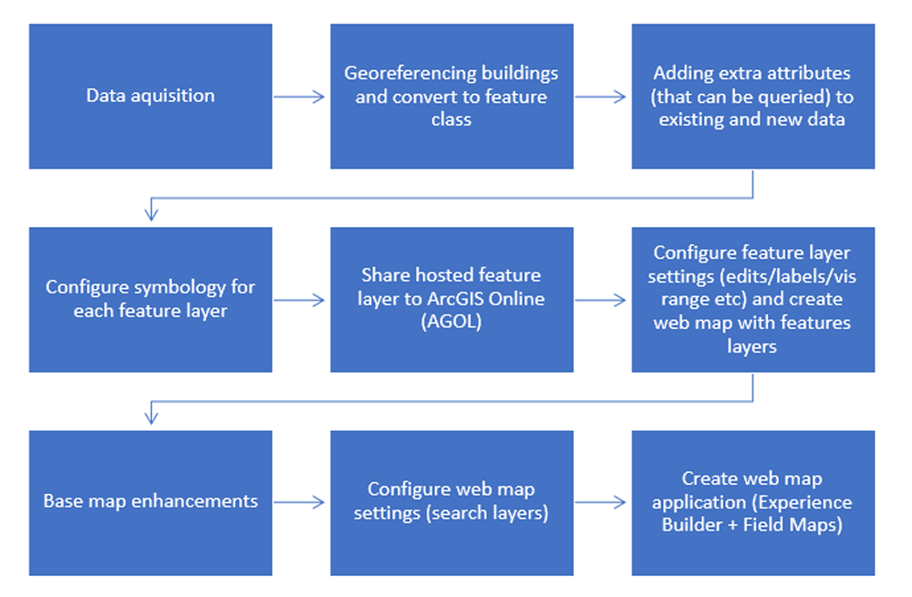

One of our tasks was to update the dataset to reflect newly built or renovated buildings from the past 6 years.
Here is the process of updating the data to present levels:
2. Georeference the drawings ("teach" them where they are in the world, including their size and the direction they're facing).
3. Convert the drawings (using FME software) to feature classes (a format that can be manipulated in GIS software).
4. In ArcGIS Pro (GIS software), fill in the attribute (information) table for each building floor.
This information includes room numbers and room types for the floor plans, and type of fire safety equipment at each location in the fire safety layer.
5. Combine the new building floors together into one data "layer"
6. Merge the new data with the existing data (including deleting data that is being replaced).
7. Upload the updated data to ArcGIS Online.
8. Start the web map creation process with uploaded data.
9. Determine a reference basemap and colour mode and associated colour scheme
10. Determine if changes are to be made to basemap to acommodate are data. Make changes as necessary
11. Determine if new layers are required for map. If so create layers manually in ArcGis Pro or ArcMap.
Upload zipped shapefiles or Features Hosted Layers to be used in the map
12. Identify symbology and design custom labels and visuals in a consistent manner that is easily recognizable.
All design work is done in Adobe Illustrator, exported in .png format sutiable for online use.
13. Upload to ArcGis Online
14. Configure the layer visualisation choosing color scheme, setting label sizes, scale levels and more.
15. Configure web map application settings: setting searchable data.
16. Create web map applications: Experience Builder and Field Maps.
17. Create and customize widgets in Experience Builder to increase application functionality
